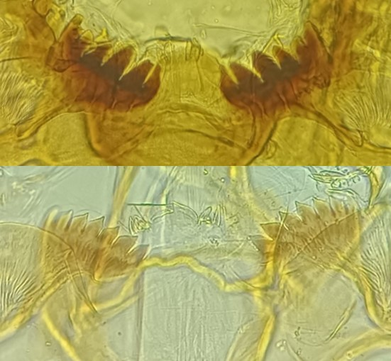
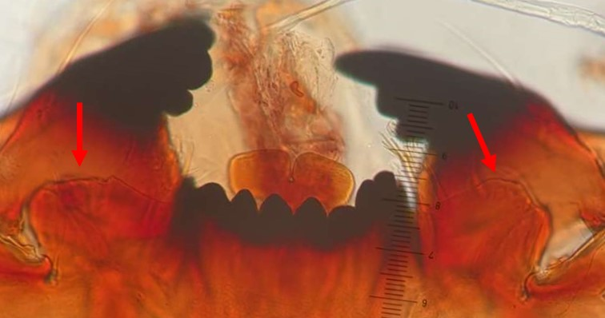

Accueil
Glossaire
Classification
Bibliographie
A propos
Rechercher
Tribu des Chironomini
Plaques ventromentales ne remontent pas sur la/les dent(s) centrale(s), mentum concave


Plaques ventromentales en forme d’éventail
Plaques ventromentales réduites